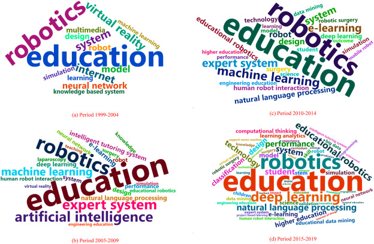

During the Disease outbreak and in the future, there will be a lot of learning.
Since the pandemic has interrupted global schooling, remote learning has emerged as a viable option,
depending on machine learning to accomplish its goals.
The detailed assessment of AI in education, the use of AI in education, typical learning in the pandemic era,
and the role of AI disease outbreak learning are all important for both current and future residents.
While statistical methods and automated based on learning jobs that are smarter than normal continue to be important, learning is becoming more automated.
It helps individuals to be more concentrated on their learning opportunities and to recognize when they do not grasp a subject completely.
First and foremost, the instructors provide valuable assistance throughout the assessment process of student learning outcomes.
Exploring new opportunities with AI in education
In schools around the world, education leaders, educators, and students are exploring the power of AI to save time, personalize learning, and increase the efficiency of their operations.
Although AI has already been used to boost inclusivity and productivity,
recent advancements offer the opportunity to reimagine solutions to longstanding challenges in education at a time when they are perhaps needed most.
